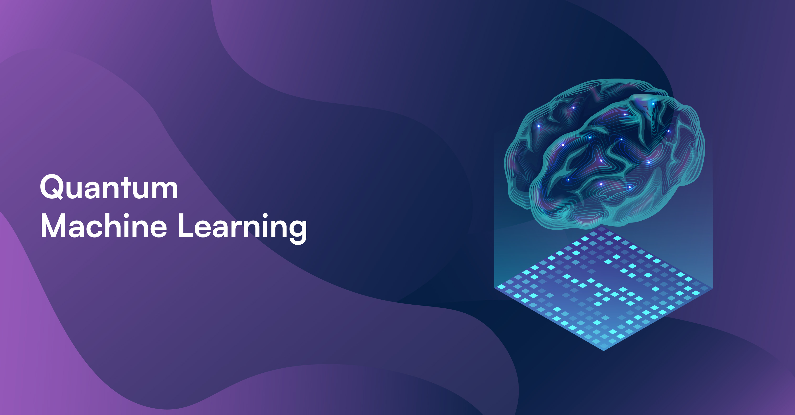

Quantic Machine Learning
Quantum machine learning (AQM) is a field of research at the crossroads of artificial intelligence and quantum computing. It aims to combine machine learning capabilities, which allow machines to learn and improve from data, with the computing power of quantum computers. They exploit the fascinating properties of quantum mechanics, such as superposition and entanglement, to perform parallel calculations and process complex data sets in new ways.
Why quantum machine learning?
Classic machine learning, although efficient in many areas, encounters limits in the face of the increasing complexity of problems. AQM, by exploiting the unique properties of qubits, opens new perspectives for:
- Accelerate learning processes: The ability of qubits to exist in multiple states simultaneously allows many possibilities to be explored in parallel, which can significantly accelerate learning and solution discovery optimal.
- Solving complex problems: AQM opens the way to solving optimization and machine learning problems that are currently beyond the reach of classical computers, due to their dimensionality and their complexity.
- Develop new algorithms: The AQM encourages the design of novel learning algorithms, capitalizing on quantum properties to explore larger search spaces and discover correlations and patterns up to -there inaccessible.
Potential applications of quantum machine learning
AQM has the potential to revolutionize many fields by enabling the development of more efficient machine learning models:
- Discovery of new drugs: By simulating with increased precision the interaction between molecules, AQM could accelerate the discovery of new drugs and materials with novel properties.
- Finance: AQM could help develop more accurate and efficient financial risk management models, taking into account complex factors and non-linear relationships between economic variables.
- Logistics and optimization: AQM could optimize inventory management and supply chains, finding optimal solutions for delivery planning and resource management.
- Chemistry and materials: The simulation of complex systems at the atomic scale would make it possible to design new materials with specific properties, such as superconducting materials at room temperature or high-performance catalysts.
The challenges of quantum machine learning
Despite its immense potential, AQM is still a developing research area and several challenges remain to be overcome:
- Availability of reliable quantum computers: Current quantum computers are still at an experimental stage and struggle to achieve the stability and computing power needed for complex AQM applications.
- Developing efficient quantum algorithms: Designing machine learning algorithms that fully exploit the capabilities of quantum computers is a major research challenge. It is not enough to simply transpose classical algorithms using quantum principles.
- Quantum noise and errors: Qubits are sensitive to disturbances in their environment, which can lead to errors and affect the accuracy of learning calculations. Error correction and fault tolerance techniques are therefore crucial.
Quantum machine learning is a promising field with the potential to revolutionize many industries. Many challenges remain, but rapid progress in research and development